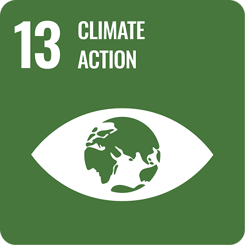
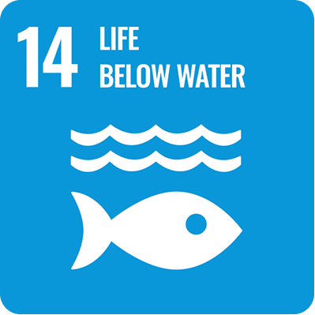

Kenali SDG 13 dan SDG 14 serta langkah sederhana yang dapat kita lakukan untuk menjaga iklim dan laut.
Pelajari lebih lanjutLaut menyerap sebagian besar panas berlebih di Bumi dan menjadi sumber pangan bagi jutaan orang. Namun pemanasan global, sampah plastik, dan kerusakan ekosistem pesisir membuat laut semakin tertekan. Menjaga laut berarti menjaga iklim, dan menjaga iklim berarti melindungi laut. Website ini mengajak kamu memahami keduanya.
Kenali dua tujuan pembangunan berkelanjutan
Mengambil tindakan untuk mengatasi perubahan iklim dan dampaknya, termasuk naiknya muka air laut dan abrasi di wilayah pesisir.
Pelajari lebih lanjut

Melindungi dan memanfaatkan laut serta sumber daya kelautan secara berkelanjutan, dari terumbu karang hingga ikan yang kita konsumsi.
Pelajari lebih lanjutPerubahan iklim dan kerusakan ekosistem laut saling berkaitan. Emisi karbon memanaskan Bumi sekaligus membuat air laut lebih asam, sehingga karang dan biota laut ikut terancam. Menjaga lingkungan hari ini adalah cara membangun masa depan yang lebih baik.
Laut menyerap sekitar 90% kelebihan panas akibat pemanasan global
Laut menyerap sekitar ¼ emisi CO₂ buatan manusia
Indonesia memiliki sekitar ⅕ mangrove dunia, sekitar 3,39 juta hektare
Satu pemahaman hari ini bisa menjadi satu kebiasaan baik besok.